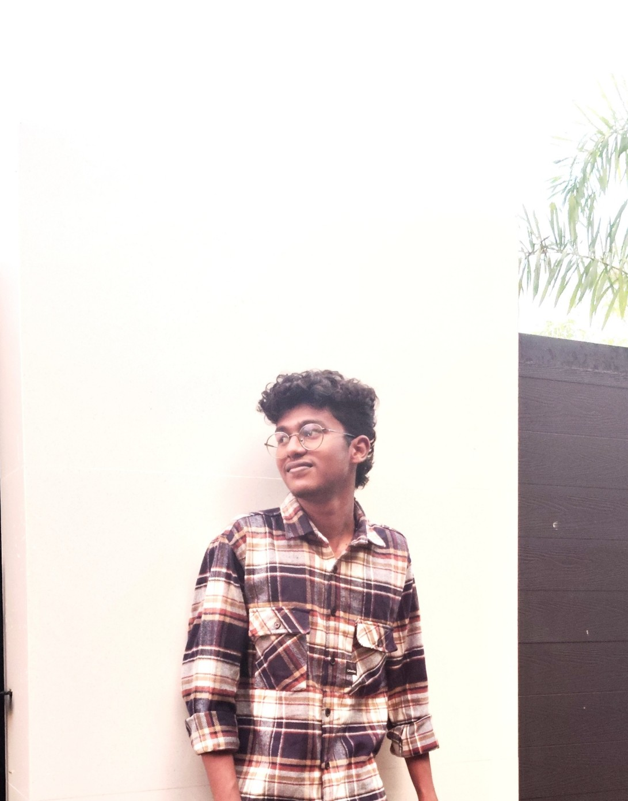

About Me


Things I Learned


Stuffs I Learned
Shortcuts for Frontend 👇 { CB ashif }


Experience I Got


My Contributions


My Certificates

Certificate 1

Certificate 2

Certificate 3
Certificate 4

Inspiration


Clan Initiative


Tasks I Completed


Challenges I Faced


Experience by Weekly Bash


Suggestion for Our Community

My Gratefulness